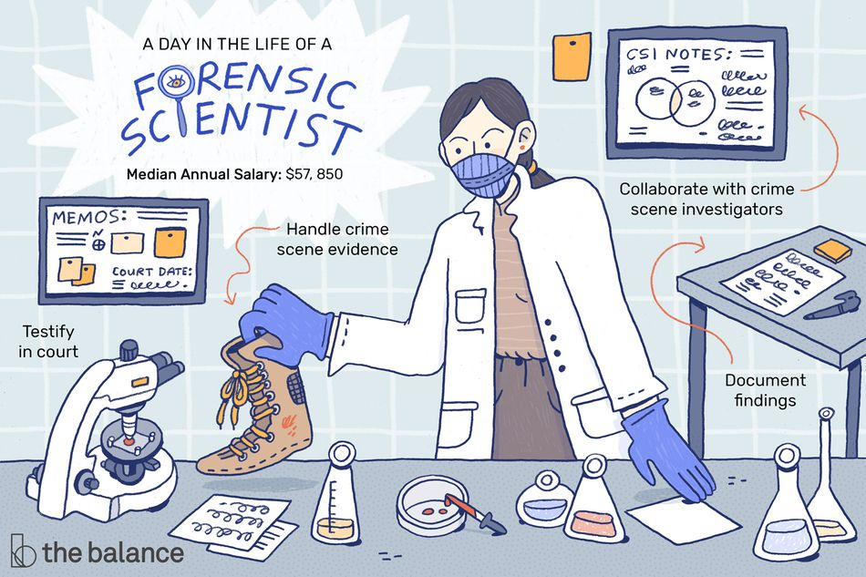
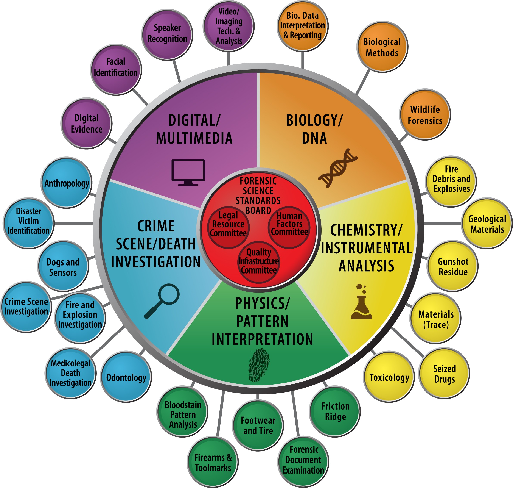

Forensic science is the study of crime. Forensic scientists study how murderers kill and also see if any accidents occur with foul play (basically to see if accident are really just an accident.)

Forensic science uses many areas of science like biology, chemistry, medicine sometimes psychology and physics to examine evidence left at the crime scenes, including substance, tissue trace, chemicals, traces of DNA, etc.
#1 Teeth are use in over 93% of crime cases to identify remain because teeth are bones. Bones are one of the most sturdiest part of the body.
#2 Analysis takes longer than people think. Many TV show protray testing around 25-45 minutes, but it actually can take weeks to get the results.
#3 DNA testing is not 100% accurate, although the possibility is low sometimes it can make mistakes.
#4 Deleted computer files are not completely gone and can always be recovered.